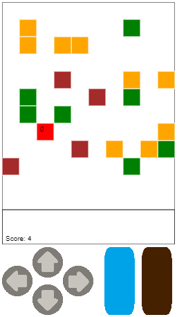

LumbaJack
Summary
Bare bones of a lumberjack themed game created in one night during the Great Canadian Appathon in 2012. The player moves around the forest chopping down trees and needs to put out trees on fire.
Tools Used


JavaScript, jQuery, PhoneGap

In September 2012, I put together a team of beginner coders for the Great Canadian Appathon. Unfortunately due to upcoming midterms and course projects, we could only participate for the first night. Together with my team, we got a crude version of the game created in JavaScript and packaged the game for Android using PhoneGap. It isn't completely functional and is far from pretty, but it was my first big coding project I created for fun and not for school. This is what we got accomplished.
The theme was Canada, so I designed a game about a lumberjack chopping down trees. Some of these trees would be on fire. Put out the fire first and then chop it down, or let it burn too long and you'll have less points to earn. Green squares are trees, orange squares are burning trees, and brown squares are tree stumps. The red square is the lumberjack, with the small number indicating the direction he is facing.